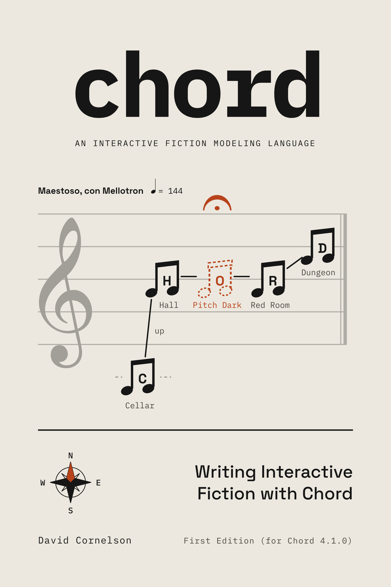

You have met a handful of trait words already: scenery,
plural, proper, concealed,
openable, lockable, transparent,
unlisted and enterable. Each one is an
adjective after the kind that gives a thing an ability or a manner. This
chapter is a tour of the ones that let the player do something to a
thing: wear it, read it, eat it, switch it on, pull it, push it and
break it.
The pattern is the same every time, and it is worth stating once. A trait word pairs a thing with one of the platform’s standard actions. The action already exists, the player already knows its verbs, and all of its replies are already written. Your one word says that this thing is the kind of thing the action applies to. Without the word, the action refuses politely. With it, the action works.
The list of trait words is closed. You choose from it and cannot add to it by typing a new adjective. Chapter 24 shows the proper way to make a trait of your own.
wearable lets a thing be put on and
taken off.
create the travelling coat
aka coat
a thing, wearable
A long coat the colour of the road.A person can begin the story wearing something. The line is
wears, and it sits beside carries in the
person’s block.
create Ansel
a person, proper
playable
starts in the Lodge
carries the wax taper
wears the travelling coat> inventory
You are carrying and wearing:
a wax taper
a travelling coat (worn)
> take off coat
You take off the travelling coat.
> wear coat
You put on the travelling coat.A bare wearable thing can be worn with anything else. If
two things ought to compete for the same place, say where each is worn,
with wearable on the followed by a word of your own for the
part of the body. The Relighting has one coat and nothing to compete
with it, so here are a hat and a cap from another story, which has a
room called the Den:
create the hat
a thing, wearable on the head
in the Den
A hat.
create the cap
a thing, wearable on the head
in the Den
A cap.> wear hat
(first taking the hat)
Taken.
You put on the hat.
> wear cap
You're already wearing the hat on your head.readable lets a thing be read, and it
is the first trait word in this chapter that needs a setting. The
setting is the text, written with text and then the words
in quotation marks.
create the grimoire
aka book, margin, note
a thing, readable with text "In the margin, in a small brown hand: gnusto. Came over the water as a working, they say. Meaning lost."
on the reading desk
A book as long as your forearm, chained to nothing any more. Its pages
are blank, or were. Here and there a line of ink has come back, as
frost comes onto a window. Someone has written in one margin.This is one of the places chapter 1 promised, where quotation marks are needed. The text is one line, however long, and it cannot itself contain a quotation mark.
A readable thing has two pieces of prose, and the player reaches them with two different verbs. The description is what the thing looks like. The text is what it says.
> examine book
A book as long as your forearm, chained to nothing any more. Its pages are blank, or were. Here and there a line of ink has come back, as frost comes onto a window. Someone has written in one margin.
> read book
(first taking the grimoire)
You take the grimoire from the reading desk.
The grimoire reads:
In the margin, in a small brown hand: gnusto. Came over the water as a working, they say. Meaning lost.The description ends by pointing at the margin, because a player will
not think to read a blank book unless something tells them to. The same
goes for the aka line: once the description has said
“margin”, read margin has to work.
Always give readable its text. The compiler accepts the
word alone, and the player is then shown “The notice reads:” with
nothing after it.
That word in the margin, by the way, is the only piece of old lore in The Relighting. The people of this country say gnusto of sunlight, as a blessing and a habit of speech, and the scholars of the Hall always held that it came from somewhere else and once meant something more.
edible lets a thing be eaten, and
drinkable lets it be drunk. Once consumed,
the thing is gone from the story.
create the seed cake
aka cake
a thing, edible
on the chair
servings 2
Half a seed cake on a plate, cut with some care into two pieces.The line servings, with a number, says how many times
the thing can be eaten before it is finished. Without it, one bite is
the whole thing.
> eat cake
(first taking the seed cake)
You take the seed cake from the chair.
You eat some of the seed cake.
> eat cake
You eat the seed cake.A drinkable thing is written the same way, and servings
counts its sips.
pullable and
pushable let a thing answer
pull and push. By themselves they do very
little: the action succeeds, the player is told so, and nothing in the
world changes.
create the bell rope
aka rope
a thing, scenery, pullable
in the Bell Stair
A rope as thick as your wrist, coming down out of the dark.> pull rope
You pull the bell rope.
> take rope
The bell rope is fixed in place.That is deliberate. Pulling a rope ought to ring a bell, and what a pull causes is for you to say. Part III teaches how, and the rope is here now so that there is something to attach the consequence to. A lever, a cord, a handle and a drawer are all pullable things waiting for chapter 14.
A pushable thing has one ability that needs no further writing. It can be pushed from one room to another, if you say between which rooms. Nothing in The Relighting travels this way, so here is a trolley from the same other story, whose Den has a Yard to the north of it:
create the trolley
a thing, pushable
in the Den
A trolley.
pushing
between the Den and the Yard
end pushingThe pushing block lists pairs of rooms. A row beginning
between allows the push both ways, and a row written
from the Den to the Yard allows it one way. There must be
an ordinary exit between the two rooms for the trolley to travel
along.
> push trolley north
You push the trolley north.
Yard
The yard.
You can see a trolley here.breakable lets a thing be broken by
attacking it. Add fragile and it also
breaks when it is dropped.
create the cup
aka teacup
a thing, breakable, fragile
on the chair
A china cup without a saucer, with a brown ring where the tea stood.> take cup
You take the cup from the chair.
> drop cup
The cup hits the floor and breaks.A broken thing is still there and can still be examined. Its
description does not change by itself, which is another matter for Part
III. A thing may also begin the story broken, with
starts broken beside breakable.
attached to the, followed by the name
of another thing, fixes one thing to another. An attached thing cannot
be taken. Add detachable and a pull frees
it. The Relighting fastens nothing in this way, so the tassel is from
the other story too, and it hangs from a hook in the Den:
create the tassel
a thing, attached to the hook, detachable
in the Den
A tassel.> take tassel
The tassel is fixed to the hook.
> pull tassel
You pull the tassel free of the hook.
> take tassel
Taken.This differs from scenery in what the player is told and
in what can change. Scenery is fixed in place for good. An attached
thing is fixed to a particular other thing, the refusal names it, and
the attachment can end.
switchable gives a thing an on and an
off. The wireless is the last thing from the other story:
create the wireless
a thing, switchable
in the Den
A wireless set.> switch on wireless
The wireless hums to life.
> switch off wireless
The wireless powers down with a soft whir.Like pulling, switching changes one fact about the thing and leaves
the consequences to you. A switchable thing begins off unless you write
starts on. Lanternhall has stood dark for thirty years and
has nothing in it to switch on, so The Relighting does not use this
word.
Five more trait words are on the list, and each depends on something this book has not reached. They are named here so that you know they exist.
cuttable,
diggable and
flammable let a thing be cut, dug or
burned with a named tool. Each needs you to say what the cutting,
digging or burning does, which is a clause from chapter 14.settable makes a thing a dial with
named positions. The positions are states, from chapter 13.costs puts a price on a thing. The
price is paid from a counter, from chapter 18.The trait words that concern light and sound have the next chapter to themselves, and Appendix B lists every trait word with its settings.
Copy relighting.story from the companion folder
chapter-09 over your own file. It is the story with this
chapter’s changes made, and it holds the lines the chapter did not print
in full. To make the changes by hand instead, work from this list and
take the rest from that file: add the coat, the seed cake, the cup, the
candles and the bell rope, make the grimoire readable, give Ansel the
wears line, and mention the candles in the Refectory’s
description.
sharpee compose relighting.story --check
sharpee play .Then do to each new thing what it is for, and also what it is not for. The refusals are as much a part of the story as the successes, and you should know what your player will read.
> read coat
There's nothing written on the travelling coat.
> eat coat
That's not something you can eat.Under the Hood: a trait and its action ·
sharpee compose
Each trait word in this chapter adds one trait to the thing, and each
trait has a standard action that looks for it. wearable is
read by wearing and taking_off,
edible by eating and drinking,
readable by reading, switchable
by switching_on and switching_off,
pullable by pulling, and pushable
by pushing. The action’s first step is to ask whether the
thing has the trait, and “That’s not something you can eat” is the
answer when it does not. A setting, such as the text of a readable thing
or the servings of an edible one, is a field on the trait.
From another system: properties and classes
An Inform 10 author would write most of this chapter as properties: a thing is wearable, edible, pushable between rooms, or switched on. A TADS 3 author would reach for classes such as a wearable, a food or a switch. Chord’s trait words are closer to the Inform 10 properties in how they read and closer to the TADS 3 classes in what they are, since each one brings behaviour with it and not only a flag. What neither system prepares you for is that the list is closed. In Chord you do not add a property to a thing by declaring it. You compose a thing from the trait words that exist, and you define a new trait, with its own behaviour, when none of them fits.
Ansel arrives in a coat, Hobb’s cake can be eaten and his cup broken, the grimoire can be read, and the bell rope can be pulled to no effect. The next chapter turns to the trait words the story is named for: the ones that give light.